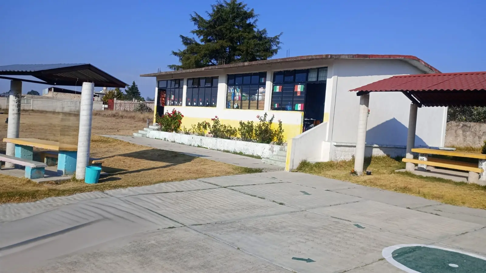
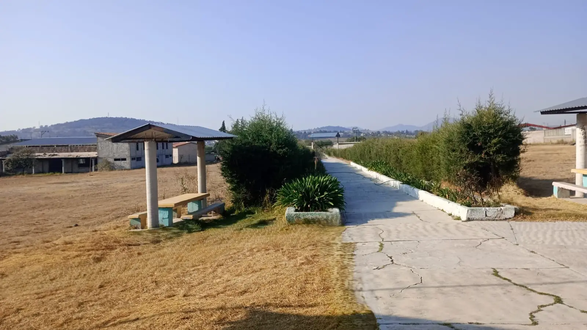
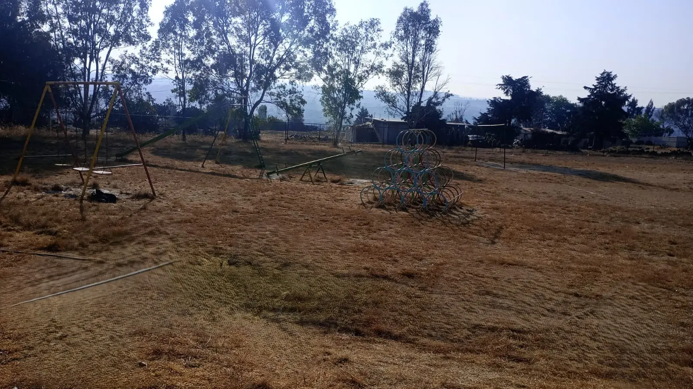

Nuestra Misión
Somos una institución educativa comprometida con la formación integral de niñas y niños, fundamentada en una educación de excelencia, inclusión y valores éticos. Nuestra misión es potenciar las habilidades académicas y sociales de los alumnos mediante un ambiente seguro y participativo, fomentando el diálogo entre docentes, padres de familia y estudiantes para consolidar una comunidad de aprendizaje que prepare a los educandos para enfrentar con éxito los retos de su entorno y del futuro.

Información Institucional
Dirección CALLE BENITO JUÁREZ 1, COL. ASENTAMIENTO HUMANO, CP 50373, SAN ANTONIO ARROYO ZARCO, MÉXICO.
Referencia 500 Metros Del Lienzo Charro Camino A San Antonio Arroyo Zarco.
CCT Supervisión 15FIZ2238U
Directora Maria Magdalena Porras Salas
Fundación 02 de Septiembre de 1987
Contacto Tel: 7121539887 | migcei@hotmail.com
80 Alumnos
42 Niños
38 Niñas
5 Maestros
Nuestra Comunidad

